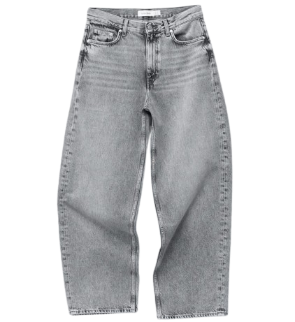
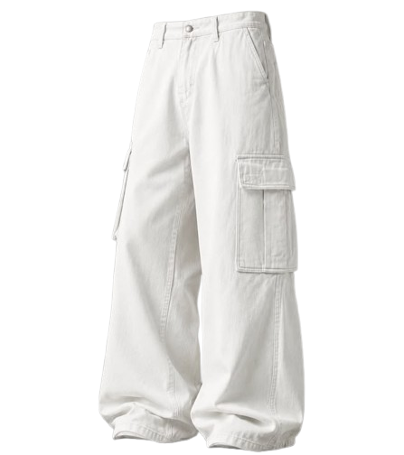
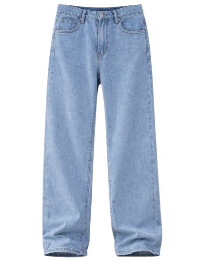
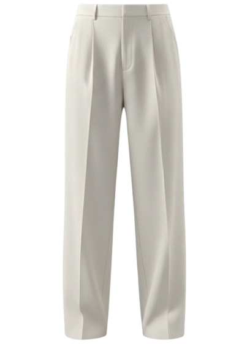
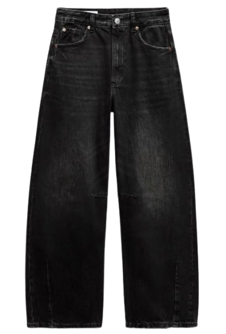
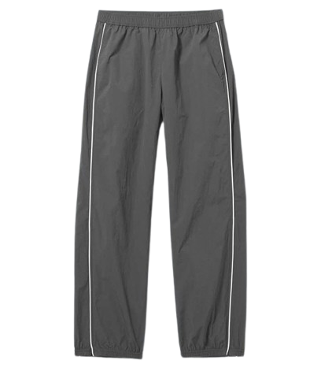
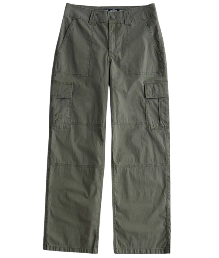
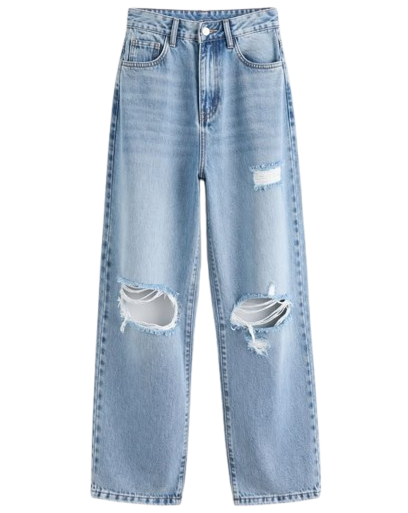

Interactive Style Filter
Pilih pakaian lama yang ada di lemarimu untuk melihat rekomendasi padu padan instan!
Hasil Rekomendasi Gaya Untukmu:
Nama Pakaian
Panduan gaya...
Inspirasi Palet Warna
Pilih warna pakaian lamamu berdasarkan kategorinya dan temukan kombinasi terbaiknya!
1. Earth Tone & Neutral
Biru Tua (Navy)
Rekomendasi Utama:
Klik kartu untuk melihat semua 6 kombinasi warna.
Beige (Krem)
Rekomendasi Utama:
Klik kartu untuk melihat semua 4 kombinasi warna.
Cokelat (Brown)
Rekomendasi Utama:
Klik kartu untuk melihat semua 8 kombinasi warna.
Olive Green
Rekomendasi Utama:
Klik kartu untuk melihat semua 5 kombinasi warna.
2. Soft Pastel Tone
Kuning Pastel
Rekomendasi Utama:
Klik kartu untuk melihat semua 5 kombinasi warna.
Dusty Pink
Rekomendasi Utama:
Klik kartu untuk melihat semua 5 kombinasi warna.
Lilac (Ungu Muda)
Rekomendasi Utama:
Klik kartu untuk melihat semua 5 kombinasi warna.
Mint Green
Rekomendasi Utama:
Klik kartu untuk melihat semua 5 kombinasi warna.
3. Bold & Bright
Terracotta (Bata)
Rekomendasi Utama:
Klik kartu untuk melihat semua 5 kombinasi warna.
Burgundy (Marun)
Rekomendasi Utama:
Klik kartu untuk melihat semua 5 kombinasi warna.
Mustard Yellow
Rekomendasi Utama:
Klik kartu untuk melihat semua 5 kombinasi warna.
Emerald Green
Rekomendasi Utama:
Klik kartu untuk melihat semua 5 kombinasi warna.
Padu Padan Jenis Baju
Punya baju-baju ini di lemari? Jangan dibuang, coba padukan seperti ini!

1. Sweater
Kombinasi Utama:
- Loose Pants / Jeans
- White Longsleeve Shirt
Klik kartu untuk melihat detail lengkap paduan celana & aksesori.

2. Kemeja
Kombinasi Utama:
- Kaos Polos & Chino Pants
- Cargo Pants
Klik kartu untuk melihat detail lengkap paduan celana & aksesori.

3. Denim Jacket
Kombinasi Utama:
- Hoodie / Kaos Hitam
- Black Slim-fit Jeans
Klik kartu untuk melihat detail lengkap paduan celana & aksesori.

4. Kaos (T-Shirt)
Kombinasi Utama:
- Ankle Pants
- Aksesori Minimalis
Klik kartu untuk melihat detail lengkap paduan celana & aksesori.

5. Blus (Blouse)
Kombinasi Utama:
- Culotte Pants / Rok Plisket
- Flat Shoes / Mules
Klik kartu untuk melihat detail lengkap paduan celana & aksesori.

6. Hoodie
Kombinasi Utama:
- Sweatpants / Baggy Jeans
- Sneakers
Klik kartu untuk melihat detail lengkap paduan celana & aksesori.

7. Cardigan
Kombinasi Utama:
- Kaos Polos & High-waist Jeans
- Loafers / Sneakers
Klik kartu untuk melihat detail lengkap paduan celana & aksesori.

8. Blazer
Kombinasi Utama:
- Kaos Polos & Loose Jeans
- Casual Sneakers
Klik kartu untuk melihat detail lengkap paduan celana & aksesori.
Padu Padan Jenis Celana
Punya celana-celana ini di lemari? Jangan dibuang, coba padukan atasan yang tepat seperti ini!

1. Baggy Jeans Grey
Kombinasi Utama:
- Kaos Oversized Putih
- Crop Top Hitam
Klik kartu untuk detail paduan alas kaki & aksesori.

2. Cargo Pants White
Kombinasi Utama:
- Sweater Rajut Gelap
- Kemeja Denim Biru Terang
Klik kartu untuk detail paduan alas kaki & aksesori.

3. Light Blue Jeans
Kombinasi Utama:
- Kaos Putih Polos
- Blus Floral Lembut
Klik kartu untuk detail paduan alas kaki & aksesori.

4. Beige Trousers
Kombinasi Utama:
- Kemeja Navy
- Cardigan Cokelat Tua
Klik kartu untuk detail paduan alas kaki & aksesori.

5. Black Baggy Jeans
Kombinasi Utama:
- Jaket Denim Terang
- Kaos Band / Grafis Besar
Klik kartu untuk detail paduan alas kaki & aksesori.

6. Grey Slacks
Kombinasi Utama:
- Turtleneck Hitam Polos
- Kemeja Lengan Pendek
Klik kartu untuk detail paduan alas kaki & aksesori.

7. Olive Green Cargo
Kombinasi Utama:
- Kaos Abu-abu Misty
- Hoodie Hitam Oversized
Klik kartu untuk detail paduan alas kaki & aksesori.

8. Ripped Jeans
Kombinasi Utama:
- Kemeja Flannel Kotak-kotak
- Kemeja Denim Gelap
Klik kartu untuk detail paduan alas kaki & aksesori.
Nama Baju
Deskripsi panduan gaya baju...